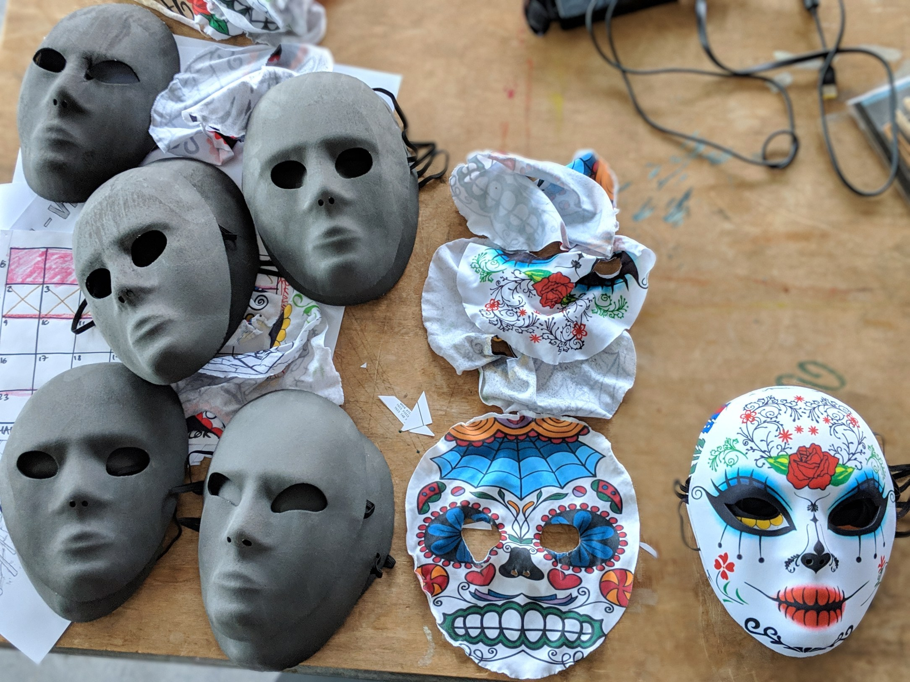
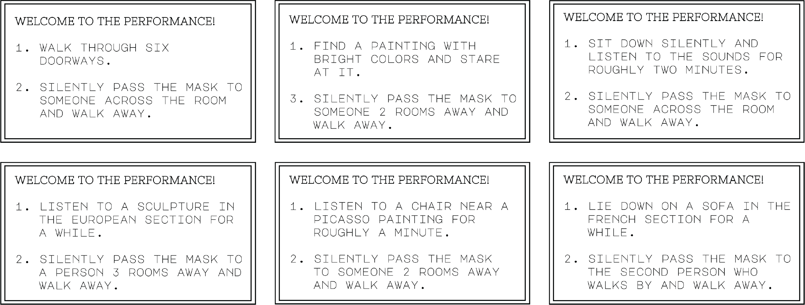
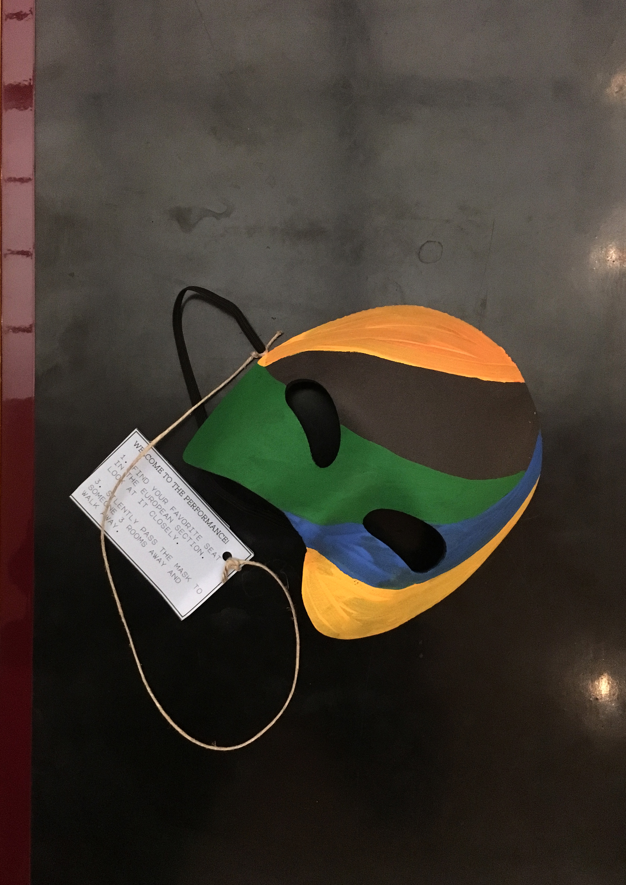
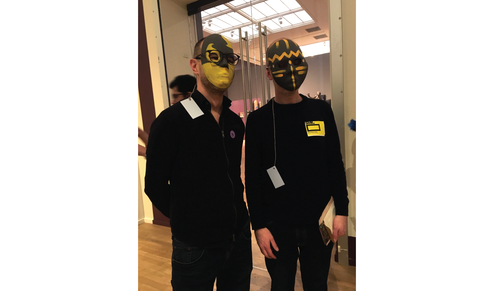
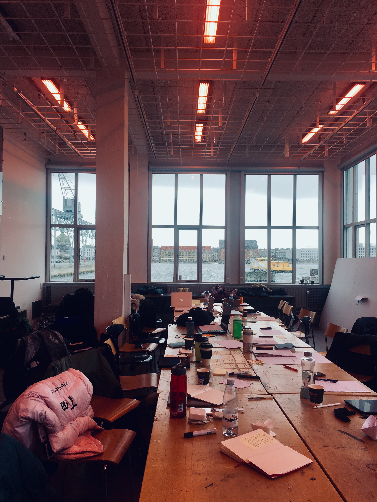

Chapter 2: Interactive Installations / Playing with Play
The Royal Danish Academy of Fine Arts
Advisors: John Sharp, Nancy Nowacek, Jesper Juul
Copenhagen, Denmark
March 2019
A performative interactive installation at The
National Gallery of Denmark.
Can play be found within the social forms of everyday life?
Can creative practice be a form of research?
Can the creative process itself become an object of play?

In a team of 6, we created a performative installation that ran at The National Gallery of Denmark on two days. This project was focused on the classical section of the gallery.
ITERATION 1:
This was a series of plain gray masks that each had different clues attached to them, regarding a painting in one of the sections. They came with instructions that prompted people to ‘enter the performance’ by putting on a mask and following through with the clues. Once they were done, they had to pass the mask onto another person.
OBSERVATIONS:
* The mask automatically implied silence and so people would take it off if they had to converse with someone next to them.
* Having a bunch of people wearing masks and silently engaging with the art in different ways was really provocative and intriguing to the visitors who didn’t have a mask on.
* The masks had a very intense look to them and just watching someone walk by wearing a mask changed the atmosphere of the space, and added a different layer to view art through.
* The instructions and clues were hard to decipher and that made the intervention somewhat unapproachable.
* The instructions were ambiguous. This uncertainty was taking away from the experience. We tried to convert the uncertainty into open-endedness in the next iteration.
* Passing off the mask once you’re done was very exciting (based on multiple interviews and observations), because it became a ritual and caused the mask to circulate wihtin the gallery.
The gray masks stood out because they were jarring to look at. We decorated the masks with bright colors that would still stand out in the classical section but not be a frightening thing to see someone in.
These are some of the prompts attached to masks. We simplified the instructions and made the prompts very open-ended and simple while still maintaining a sense of intrigue.
The 6 of us started off the performance by wearing a mask each, performing the tasks and passing it onto another person. After observing for a while, we left to let the performance flow naturally. We returned after an hour to find all 22 masks were in circulation!
FEEDBACK:
* Passing off the mask really got the flow going and somewhat created a shared understanding between visitors.
* Majority of the people engaged with the masks and the performance, while a few did not.
* According to post-performance interviews, it was exciting to be part of the performance but it was also intriguing to be a spectator noticing someone else doing something with the mask.
* While a few people didn’t put on the mask and performed the tasks while holding the mask, many would only take off the mask once they had completed the task.
CONCLUSION:
The masks changed some of the social forms of the museum. Previously, the flow and pace of people moving was homogenized and slow, while this performance added dynamism and energy to the spaces and deviated from the default in curious ways. It was really fun to explore and observe how strangers alternated between being part of a silent performance to spectators of that performance.
We were a glorious team of six people: Waverly Wilson, Anahid Bandarabadi, Elena Gold, Michael Center, Laurent Gehin and Aliza Mahmood (me). 🇺🇸🇩🇰🇫🇷🇮🇷🇵🇰
Photographed by Aliza Mahmood
The collaboration was a series of three workshops (February 23, March 2, March 9) in New York, followed by a workshop in Copenhagen from Friday, March 15 through Friday, March 22.
Thank you to The National Gallery of Denmark (Statens Museum for Kunst) for letting us use their space as our creative playground for a while.